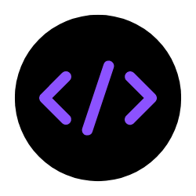
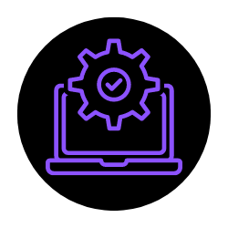
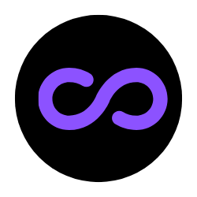
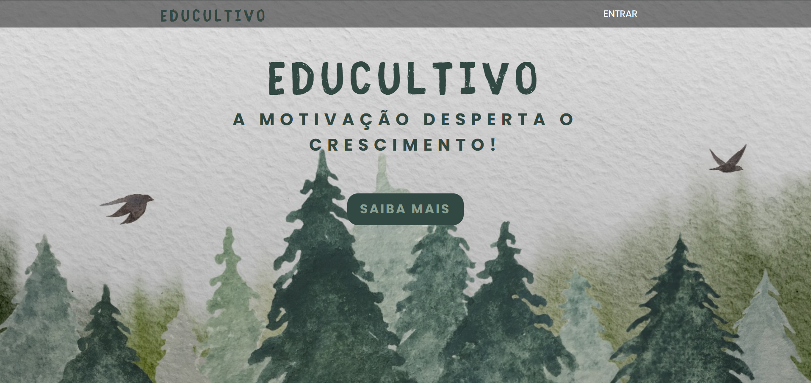
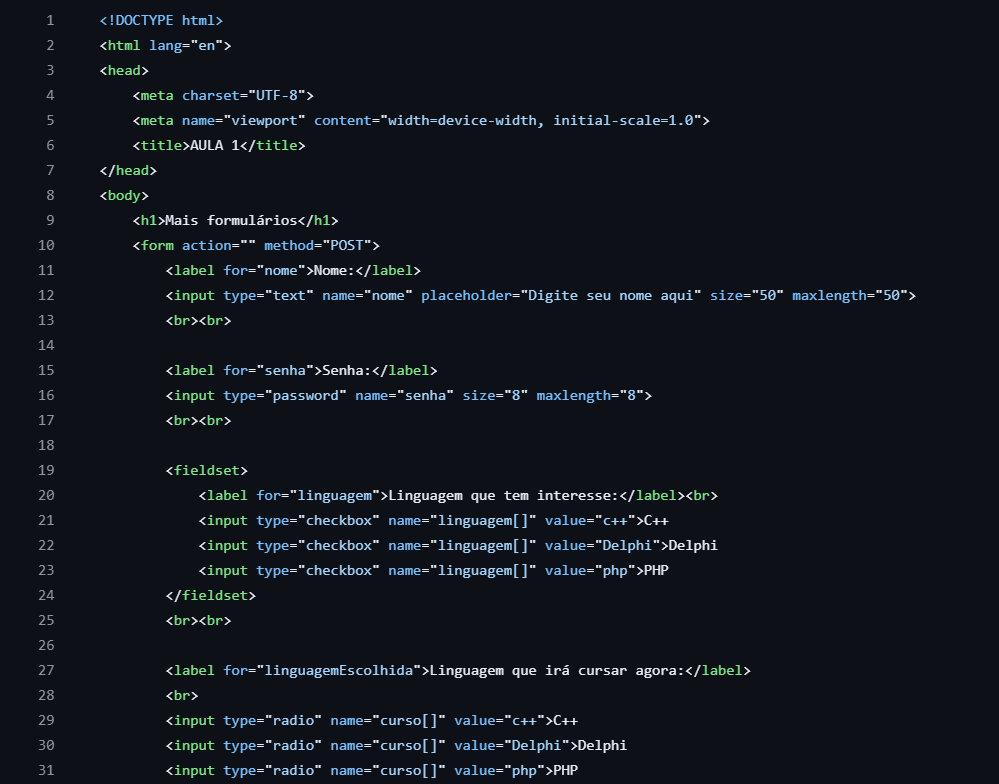

SOBRE MIM;
Hello Word!
{
Sou a Lorena, tenho 26 anos e adentrei recentemento o mundo da TI.
Após tentativas frustadas em outras áreas, completamente diferentes, arrisquei me aventurar em Engenharia de Computação após uma pesquisa sobre futuro e mercado. Infelizmente, não conegui me adaptar a faculdade integral, mas não desisti da área e consegui a transferência para Análise e Desenvolvimento de Sistemas no IFTM e uma bolsa integral em Engenharia de Software na Uninter. Desde então, tudo têm se encaminhado bem e tenho me fascinado cada fez mais pelas possibilidades que essa área nos oferece e nos permite criar. Atualmente, graças a uma oportunidade de estágio tenho aprofundado meus conhecimentos em Site Reliability Engineering e Devops. É insano e incrível!
Aproveite e navegue pelo site que construí para que você você possa conhecer um pouco mais sobre minha trajetória e experiências.
}
MINHA FORMAÇÃO;

Análise e Desenvolvimento de Sistemas
Tecnólogo em andamento com conclusão prevista para 06/2026.

Engenharia de Software
Bacharelado em andamento com conclusão prevista para 06/2027.
Análise e Desenvolvimento de Sistemas
Tecnólogo em andamento com conclusão prevista para 06/2026.
Engenharia de Software
Bacharelado em andamento com conclusão prevista para 06/2027.
MINHA EXPERIÊNCIA;

Estágio em Site Reliability Engineering
PAGBANK - 6 meses
Atividades relacionadas a implantação em produção, monitoramento e solução de incidentes e problemas de forma ágil, segura e estável.
MEU PORTIFÓLIO;


ENTRE EM CONTATO;
Estágio em Site Reliability Engineering
PAGBANK - 6 meses
Atividades relacionadas a implantação em produção, monitoramento e solução de incidentes e problemas de forma ágil, segura e estável.